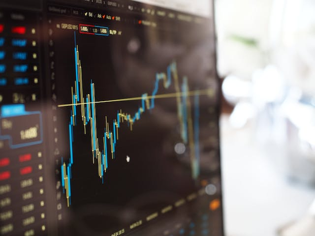

Understanding the Basics of the Stock Market
The stock market is a dynamic and complex financial system that plays a crucial role in the global economy. Whether you're a seasoned investor or a curious beginner, gaining a basic understanding of the stock market can empower you to make informed financial decisions.

The stock market is a marketplace where buying and selling of stocks (shares of ownership in a company) take place. Companies go public by issuing stocks to raise capital for expansion and operations.
Stock exchanges, such as the NYSE and Nasdaq, facilitate the trading of stocks. Buyers and sellers come together, and stock prices are determined by supply and demand. Stock prices fluctuate based on market forces, economic conditions, and investor sentiment. Bull and bear markets represent upward and downward trends, respectively.
Popular stock market indices like the S&P 500 and Dow Jones reflect the overall performance of a group of stocks. Investors use these indices to gauge the health of the market. Participants in the stock market can be individuals or institutions with varying investment strategies. Long-term investors aim for steady growth, while day traders capitalize on short-term market movements.
Investing in stocks can offer opportunities for wealth growth but involves risks. Factors influencing stock prices include economic conditions, company performance, and global events. Beginners should conduct thorough research before making investment decisions, diversify their portfolios to spread risk, and consider their risk tolerance and investment goals.
The Forex Market: A Global Overview
The foreign exchange market, often abbreviated as the "forex" or "FX" market, is a decentralized global marketplace for the trading of currencies. It is the largest and most liquid financial market in the world, where participants engage in the buying and selling of various national currencies.

Currency pairs in forex trading are quoted in pairs, such as EUR/USD (Euro/US Dollar) or USD/JPY (US Dollar/Japanese Yen). Major currency pairs involve the most widely traded currencies, such as the US Dollar, Euro, and Japanese Yen. Minor pairs don't include the US Dollar but involve other major currencies. Exotic pairs include one major currency and one from a smaller or emerging-market economy.
The forex market comprises a diverse range of participants, including central banks, commercial banks, financial institutions, corporations, hedge funds, and individual traders. Central banks play a significant role in influencing currency values through monetary policy. The forex market operates in a decentralized manner, and trading occurs over-the-counter (OTC) through a network of computers and communication devices.
Forex trading often involves the use of leverage, allowing traders to control a larger position size with a relatively small amount of capital. The market can be highly volatile, influenced by economic indicators, geopolitical events, interest rates, and other factors. Traders rely on market analysis, including technical analysis, fundamental analysis, and sentiment analysis, to make informed decisions.
Individuals interested in forex trading should educate themselves thoroughly, consider practicing with a demo account, and be aware of the potential for financial losses.
The Art of Trading: Strategies and Tips
Trading is the act of buying and selling financial instruments, such as stocks, bonds, currencies, commodities, or derivatives, with the goal of making a profit. Traders can be individuals, institutional investors, or financial institutions, and they participate in various financial markets.
Financial instruments in trading include stocks, bonds, currencies, commodities, and derivatives. Types of trading include day trading, swing trading, position trading, and algorithmic trading (algo trading) using computer algorithms.
Trading platforms provided by brokers offer real-time market data, analysis tools, and order execution capabilities. Market analysis involves technical analysis, fundamental analysis, and sentiment analysis. Traders employ risk management strategies to protect their capital, including setting stop-loss orders, diversifying portfolios, and determining position sizes.
Leverage allows traders to control a larger position size with a smaller amount of capital, but it also increases the risk of significant losses. Market orders and limit orders are common order types used in trading. Trading is subject to regulations and oversight by financial authorities to ensure fair and transparent markets.
The psychology of trading is crucial, as emotions such as fear and greed can impact decisions. Successful traders often develop discipline and emotional control. Retail traders, institutional traders, and market makers are types of market participants.
It's important to note that trading involves risk, and there are no guarantees of profit. Successful traders combine a solid understanding of the markets with disciplined risk management and continuous learning. Individuals considering trading should be aware of the potential for financial losses and carefully assess their risk tolerance.